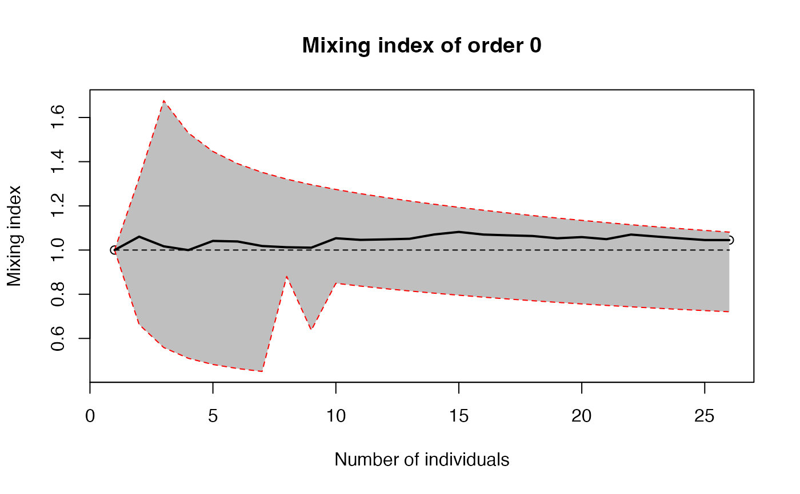
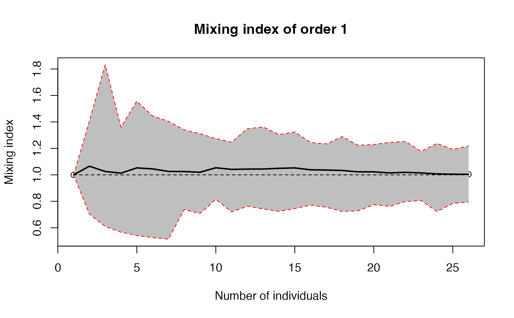

The mixing index is the ratio of observed diversity (effective number of species) to its theoretical, null-hypothesis value.
Mixing(
spCommunity,
q.seq = seq(0, 2, by = 0.1),
divCorrection = "None",
n.seq = 1:ceiling(spCommunity$n/2),
r.seq = NULL,
spCorrection = "None",
RCorrection = "Jackknife",
H0 = ifelse(is.null(r.seq), "Multinomial", "Binomial"),
Alpha = 0.05,
NumberOfSimulations = 100,
Individual = FALSE,
ShowProgressBar = interactive(),
CheckArguments = TRUE
)A spatialized community (A wmppp.object with PointType values as species names.)
A numeric vector: the sequence of diversity orders to address. Default is from 0 to 2.
A string containing one of the possible corrections to calculate diversity, see Tsallis for all possible values.
"None" uses the plugin estimator.
It is the default value.
A vector of integers. Entropy will be accumulated along this number of neighbors around each individual. Default is 10% of the individuals.
A vector of distances.
If NULL accumulation is along n, else neighbors are accumulated in circles of radius r.
The edge-effect correction to apply when estimating the entropy of a neighborhood community that does not fit in the window. Does not apply if neighborhoods are defined by the number of neighbors. Default is "None". "Extrapolation" extrapolates the observed diversity up to the number of individuals estimated in the full area of the neighborhood, which is slow.
The correction to apply when estimating the asymptotic richness to extrapolate local entropy in edge effect correction. A string containing a correction recognized by Richness to evaluate the total number of species. "Jackknife" is the default value. An alternative is "Rarefy" to estimate the number of species such that the entropy of order $q$ of the asymptotic distribution rarefied to the observed sample size equals the actual entropy of the data.
The null hypothesis to compare the distribution of spCommunity to.
If "none", the default value, no null hypothesis is tested.
"Multinomial" means the community will be rarefied down to the number of neighbors of n.seq.
"RandomLocation" means the points will we randomly permuted accross their actual locations.
"Binomial" means the points will we uniformly and independently drawn in the window (a binomial point process is a Poisson point process conditionally to the number of points).
The risk level of the envelope of the null hypothesis. Default is 5%.
The number of bootstraps to build confidence intervals. Default is 100.
If TRUE, individual neighborhood entropies are returned.
If TRUE (default), a progress bar is shown.
If TRUE (default), the function arguments are verified.
Should be set to FALSE to save time in simulations for example, when the arguments have been checked elsewhere.
An "Accumulation" object that is a list.
Its first item, named "spCommunity", is spCommunity.
Its second item, named "Accumulation", is a 3-D array containing average mixing index. The third dimension of the array is only of length 1: it contains observed mixing index. The first two dimensions are respectively for $q$ values and the number of points of the neighborhood, starting from 1 (the point itself, with no neighbor), or the distances starting from 0.
Its third item, named "Neighborhoods" has the same structure as the second one but its third dimension contains the local values accumulated in the neighborhood of each point.
# Generate a random community
spCommunity <- rSpCommunity(1, size=50, S=3)
# Calculate mixing indices of order 0 and 1
accum <- Mixing(spCommunity, q.seq=c(0,1))
#>
#>
plot(accum, q=0)

plot(accum, q=1)
